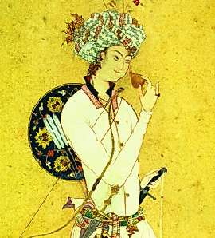

Борис Акунин
Мой календарь
Сегодня день рождения героя «Тысячи и одной ночи» луноликого калифа Гаруна аль-Рашида.
Исторический правитель Багдада Абу Джафар Харун ибн Мухаммад (763–809) был государем весьма посредственным и ничего выдающегося не совершил, но он давным-давно умер, и кого сегодня интересует его внутренняя и внешняя политика? Зато для многих поколений читателей и слушателей (мне, например, в детстве эти сказки читали вслух) калиф благороден, обаятелен и совершенно бессмертен. Он бродит инкогнито по ночному городу, сопровождаемый везирем Джафаром и телохранителем Масруром, попадает в разные приключения и восстанавливает справедливость.
Поведаю вам - впервые - одну притчу, изъятую из записанных речей Шахерезады.
Однажды весенней ночью великий калиф Гарун аль-Рашид, храни Аллах его душу, бродил по городу в глубокой печали и ничто не радовало его взгляд.
- Почему ты так грустен, прекрасный незнакомец? - спросил аль-Рашида ободранный дервиш, собиравший подаяние. - Разве ты болен или голоден? Разве небо не полно сияющих звезд?
- У меня сегодня день рождения, и я с утра всё думаю о том, что я стал на один год ближе к могиле, - уныло ответствовал калиф.
- Ну и глуп же ты, прекрасный незнакомец, - засмеялся дервиш. - Каждый день, который ты прожил, украден тобою у смерти. А сегодня ты празднуешь, что украл у нее, растяпы, еще целый год. Учись у Багдадского Вора. Он умеет радоваться своей добыче и не изводит себе душу бесполезными тревогами.
Притчу изъяли из свода сказаний, потому что калифу не к лицу учиться чему-либо у вора. Однако в Китае говорят: «Глупый учится у глупых; умный учится у умных; мудрый учится у всех».
Соединив Ближний Восток с Дальним, скажу вам, о читатели и читательницы: «Рахат-лукума вам в карму!».